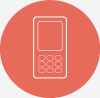

连锁超市
标题一
龙颜集团始建于1990年,位于中国西南部的四川省成都市。集团经过二十余年的发展和状大，旗下拥有多个子公司，涉足项目投资、房地产开发、建筑工程总承包、矿业开发、室内外装修、钢结构、环保节能建材研发、商贸等领域、成功打造为以实业为主、科工贸结合的综合性企业。集团公司励精图治，实力雄厚，始终秉承“真实做人、诚信做事”的企业理念，以追求卓越、铸造品牌为目标，广开思路，勇于创新，以突出的经营业绩和高度的社会责任感赢得了业界和社会的广泛尊重和赞誉。
集团位于中国四川省成都市双流县西航港天威路588号近70亩的总部基地，拥有办公楼、研发楼、厂房、员工宿舍等，共计近4万平方米，气势恢宏，设施齐全，交通便利，环境优美。
标题二
龙颜集团始建于1990年,位于中国西南部的四川省成都市。集团经过二十余年的发展和状大，旗下拥有多个子公司，涉足项目投资、房地产开发、建筑工程总承包、矿业开发、室内外装修、钢结构、环保节能建材研发、商贸等领域、成功打造为以实业为主、科工贸结合的综合性企业。集团公司励精图治，实力雄厚，始终秉承“真实做人、诚信做事”的企业理念，以追求卓越、铸造品牌为目标，广开思路，勇于创新，以突出的经营业绩和高度的社会责任感赢得了业界和社会的广泛尊重和赞誉。
集团位于中国四川省成都市双流县西航港天威路588号近70亩的总部基地，拥有办公楼、研发楼、厂房、员工宿舍等，共计近4万平方米，气势恢宏，设施齐全，交通便利，环境优美。

标题三
龙颜集团始建于1990年,位于中国西南部的四川省成都市。集团经过二十余年的发展和状大，旗下拥有多个子公司，涉足项目投资、房地产开发、建筑工程总承包、矿业开发、室内外装修、钢结构、环保节能建材研发、商贸等领域、成功打造为以实业为主、科工贸结合的综合性企业。集团公司励精图治，实力雄厚，始终秉承“真实做人、诚信做事”的企业理念，以追求卓越、铸造品牌为目标，广开思路，勇于创新，以突出的经营业绩和高度的社会责任感赢得了业界和社会的广泛尊重和赞誉。
集团位于中国四川省成都市双流县西航港天威路588号近70亩的总部基地，拥有办公楼、研发楼、厂房、员工宿舍等，共计近4万平方米，气势恢宏，设施齐全，交通便利，环境优美。